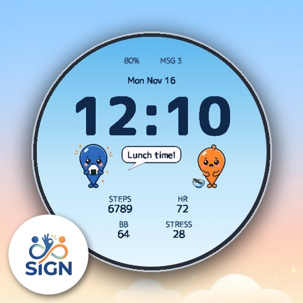
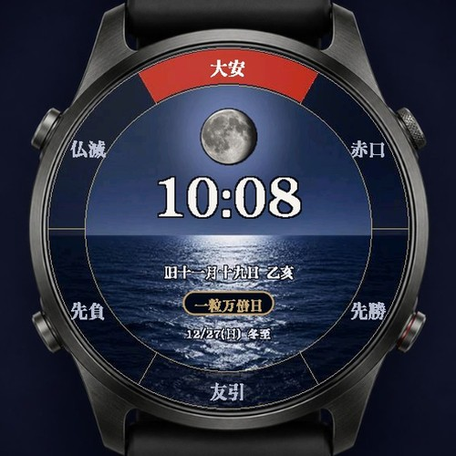
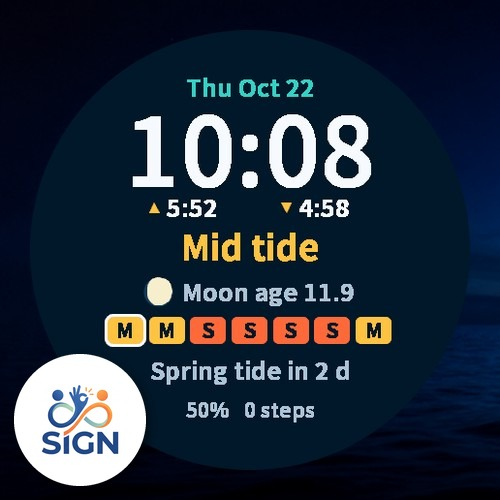

Watch Faces, Data Fields and Apps for Garmin Watches
These are the watch faces, data fields and apps for Garmin watches that SIGN (Yuichi Sato) makes and publishes on the Garmin Connect IQ store — 16 in total as of 26 November 2026. For each type you can see what it does, whether it is free or paid, and whether you can try it first. All of them are made by an independent developer; they are not official Garmin products.
Luxury analog watch faces
Analog watch faces that bring the feel of a fine watch dial to your Garmin screen. Each one lets you switch finishes from the settings.
Aurum
A gold watch face with a frameless design (no bezel drawn on the screen) and six finishes in one download.
Platina
An analog watch face in cool metal tones, with no gold. Five finishes and three layouts (Dress, Moonphase, GMT) give 15 looks.
Empress
A jewelled chronograph-style watch face with five finishes: Sapphire, Emerald, Ruby, Amethyst and Diamond White.
Digital watch faces
Large digital time combined with data or pictures.
Overwatch
Five data layouts (Cockpit, Track, Trail, Recovery, Night) in one watch face; in Auto mode it switches between them to suit the moment.

Sai and Jino
SIGN's twin characters Sai and Jino stand below the time. The sky and pictures change for morning, noon, evening and night, and the two celebrate when you reach your step goal.
Wagashi Pastel
A Japanese sweet (wagashi) for every month, from hanabira-mochi in January to yuki-usagi in December, with soft pastel colours to match.
Japanese calendar watch faces and apps
For checking Japanese calendar information, such as rokuyo and the lunar date, on your wrist. Lucky days and tide periods are calendar-based guides. For seasonal Japanese sweets, see Wagashi Pastel under Digital watch faces.

Kichijitsu
A Japanese watch face showing rokuyo and days traditionally considered lucky, such as Ichiryu Manbai-bi and Tensha-nichi, with three designs: Goshuin, Moon over the Night Sea and Edo Wadokei. Display in Japanese.
Kichijitsu Calendar
An app that lists the lucky days of the next 180 days on your watch, plus today's rokuyo, lunar date and luck score. Display in Japanese.

Tide Phase / Tide Phase Lite
A fishing watch face showing today's Japanese tide period (Spring, Mid, Neap, Long or Young tide) and moon age. A guide based on the lunar calendar; it does not show tide times or heights.
* Tide periods are a calendar-based guide. Do not use them for navigation or safety decisions.
Data fields and apps
Data fields you add to your hiking or cycling activity screen, and a timer app. Each comes as a free app and a separate paid Pro app with more fields or features.
Cairn
A hiking data field built for the climb: six fields, including elevation, total ascent and grade, on one screen.
Cairn Pro
Cairn's paid edition: 12 fields on one screen, adding VAM, distance to your ascent goal and daylight left.
Cairn Cycle
A cycling data field built around speed, power and cadence: six fields on one screen.
Cairn Cycle Pro
Cairn Cycle's paid edition: 12 fields on one screen, adding average speed and power and climb data.
Multitime
A timer app that runs up to three named timers at once.
Multitime Pro
Multitime's upgraded edition: up to 20 timers, a different vibration per timer and saved presets.
See what differs between the free and Pro versions →
Before you install
- Supported watches differ by product. Check the compatibility chart by watch model
- Multitime Pro is free for up to three timers. The other paid products can be tried for free before you buy (trial length per product is shown above). Payment is handled by the third-party service KiezelPay, not Garmin — a one-time purchase, with no subscription. How to buy a paid Garmin watch face
- Made-to-order watch faces for Garmin are also available for clubs, shops and individuals. See custom watch face design
FAQ
Q. Are any of these free?
A. Cairn, Cairn Cycle, Multitime, Kichijitsu Calendar and Tide Phase Lite are free. Multitime Pro is free for up to three timers. The other paid products can be fully tried for free during the trial (24 hours, 48 hours or 5 activities, depending on the product).
Q. Where do I pay for a paid product?
A. Payment is handled by KiezelPay, a third-party service, not by Garmin. When the trial ends, your watch shows a purchase code, and you pay on your phone or computer. The steps are in "How to buy a paid Garmin watch face".
Q. How do I check whether my Garmin is supported?
A. The compatibility chart lists which products work on each model. Each product page and its Connect IQ store page also list the supported watches.
Q. Are these official Garmin products?
A. No. They are made by SIGN (Yuichi Sato), an independent developer, and published on the Garmin Connect IQ store for Garmin watches. Questions and bug reports are welcome through the contact form.
Garmin, Connect IQ, fēnix, Forerunner and Venu are trademarks of Garmin Ltd. or its subsidiaries. The products on this page are made by SIGN (Yuichi Sato) and are not made by Garmin.